Ваші платежі в ритмі вашого календаря.
Плануйте рахунки та підписки, встановлюйте нагадування та зберігайте чіткий місячний огляд. Ваші дані залишаються на пристрої.
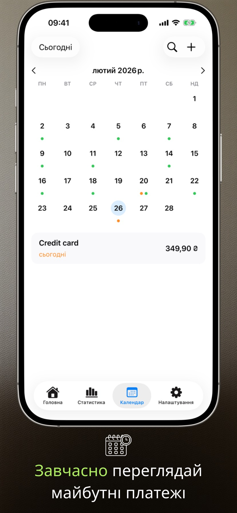
Що нового у версії 2.3.1
- Віджети працюють надійніше.
- Список платежів коректно відображається на Mac.
Екрани застосунку
Шість ключових екранів на iPhone та iPad, які показують ритм планування з Payment Calendar.
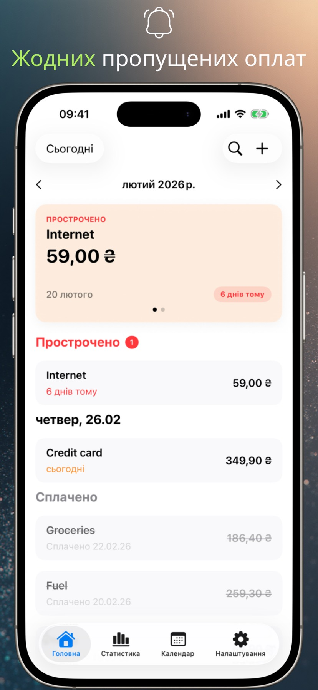
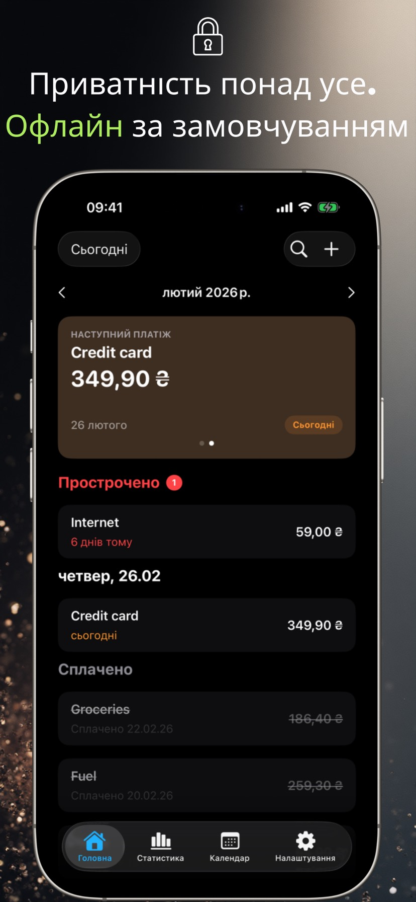
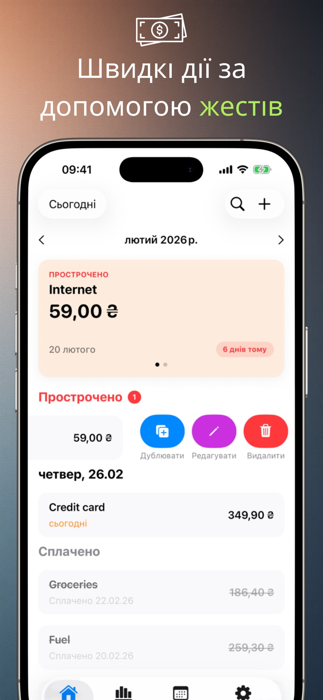
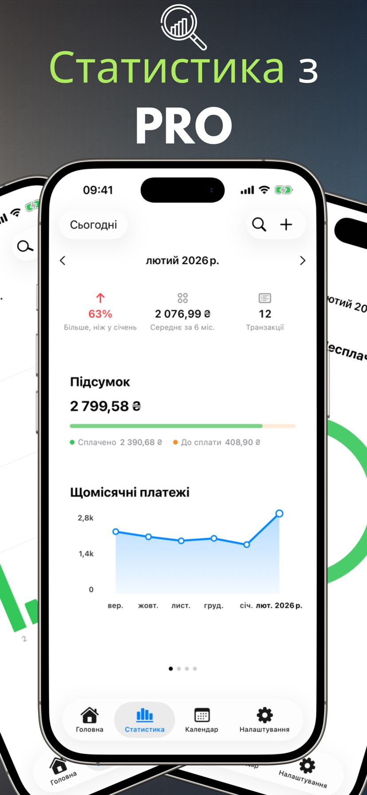
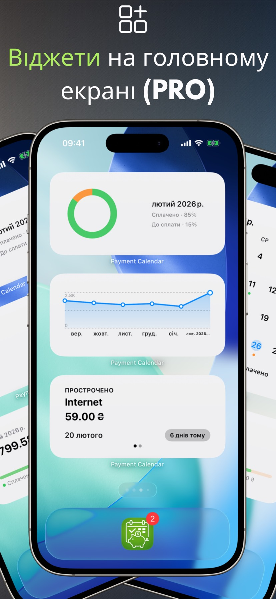
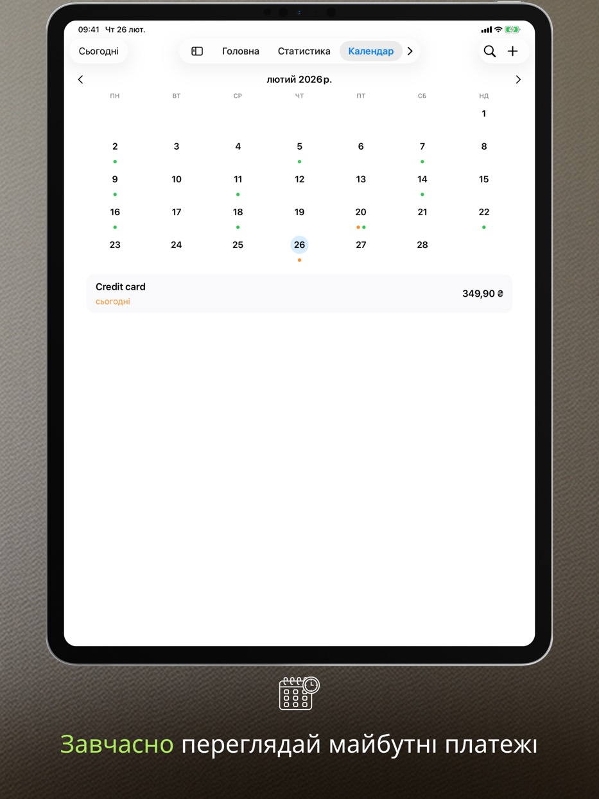
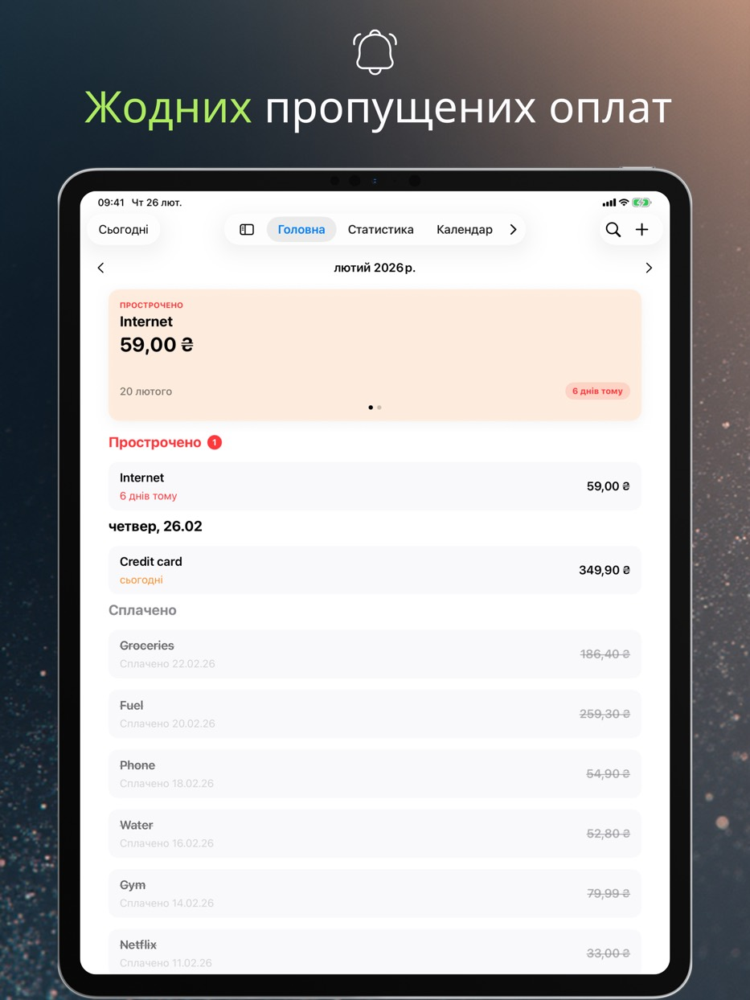
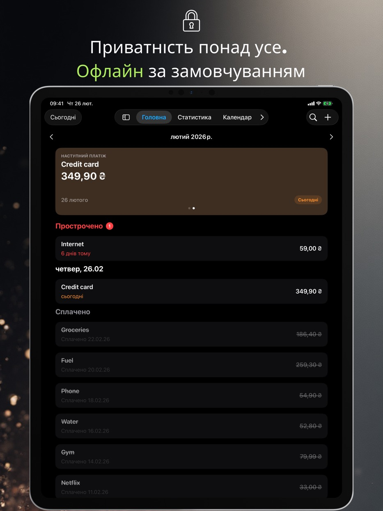
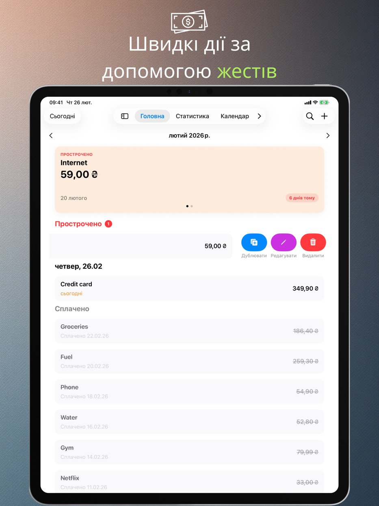
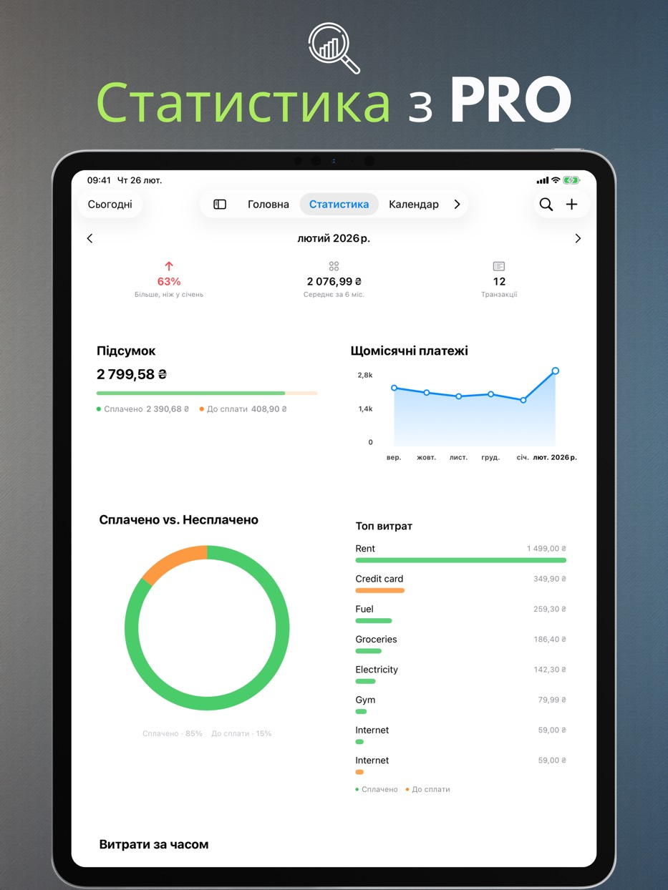
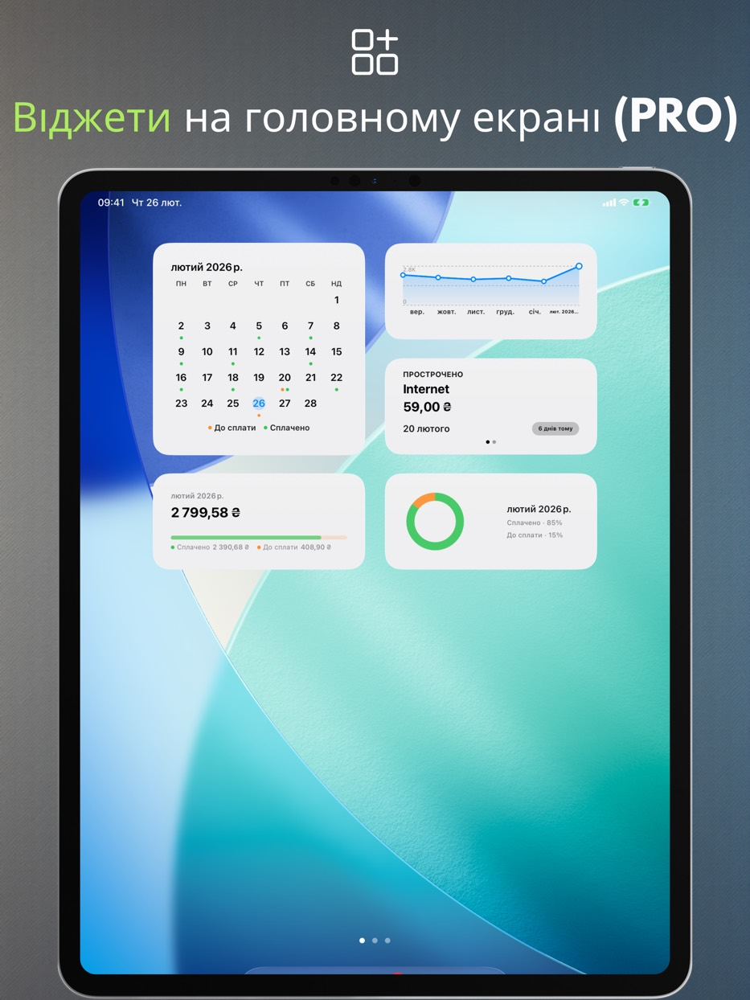
Функції застосунку
Усе нижче працює безкоштовно й без реєстрації: зрозумілий вигляд місяця, швидке додавання платежів і нагадування, що дають спокійно планувати витрати.
Календар платежів
Переглядайте майбутні терміни платежів та ваш список платежів в одному місці.
Нагадування
Отримуйте сповіщення в день платежу або за кілька днів до нього.
Жести та швидкі дії
Відмічайте як сплачене, редагуйте або дублюйте одним проведенням.
Пошук
Знаходьте платежі за назвою, сумою або примітками.
Персональні налаштування
Валюта, початок тижня, дизайн та макет, який підходить вам.
Підтримка iPad
Режим вікон і Split View, а також клавіатура та клавіатурні скорочення.
Кошик
Видалені платежі чекають у Кошику 30 днів — ви можете їх відновити.
Доступність
Застосунок масштабується за системним розміром тексту, підтримує «Зменшення руху» і ніколи не позначає стан платежу лише кольором.
Приватність
Ваші дані залишаються на пристрої.
Payment Calendar не потребує облікового запису та не відстежує вашу активність. Синхронізація iCloud є необов'язковою та за замовчуванням вимкнена.
Без реклами, без аналітики
Ми не використовуємо сторонні SDK для аналітики або реклами.
Контроль даних
Видаляйте свої дані в будь-який час у додатку або шляхом видалення.
PRO-функції
Платне розширення: статистика, віджети, регулярні платежі, синхронізація та експорт. На вибір — місячна чи річна підписка або одноразова довічна покупка.
Статистика та тренди
Щомісячні підсумки плюс 6-місячний вигляд трендів.
Віджети
Чотири віджети для початкового екрана: найближчий платіж, підсумок місяця, тренд і сітка місяця.
Повторювані платежі
Автоматично створюйте повторювані платежі.
Синхронізація iCloud
Синхронізуйте дані між вашими пристроями, якщо ввімкнено.
Експорт CSV/PDF
Діліться підсумками або архівуйте свої дані.
Доступні мови
Payment Calendar підтримує польську, англійську, іспанську, німецьку, французьку, італійську, українську, шведську, спрощену китайську, японську та португальську (Бразилія).
Поширені запитання (FAQ)
Ознайомтеся з короткими відповідями на найпоширеніші запитання про Payment Calendar.
Перш ніж завантажити
Як не забути про оплату рахунку?
Payment Calendar показує всі майбутні платежі у місячному вигляді та надсилає нагадування заздалегідь, тож ви завжди бачите наперед, що і коли потрібно сплатити.
Як відстежувати підписки, щоб не платити за непотрібні?
Додайте підписки як регулярні платежі (функція PRO) — застосунок автоматично нагадує про наступні поновлення, тож простіше помітити та скасувати ті, якими ви вже не користуєтеся.
Чи є застосунок як календар, але для рахунків і платежів?
Так, саме в цьому й полягає ідея Payment Calendar — місячний вигляд показує платежі замість подій, з позначенням, що вже оплачено, а що ще очікує на термін.
Як керувати платежами без створення облікового запису?
Payment Calendar не вимагає реєстрації чи входу — ви встановлюєте застосунок і одразу додаєте платежі. Дані залишаються локально на пристрої, якщо ви самі не увімкнете додаткову синхронізацію iCloud.
Чим Payment Calendar відрізняється від звичайного календаря в телефоні?
Стандартний календар показує події, а не платежі — там немає статусу «оплачено / до сплати», нагадувань, прив'язаних до рахунків, чи огляду витрат. Payment Calendar створений спеціально для платежів: із сумами, валютами, регулярністю та статистикою того, скільки ви фактично витрачаєте щомісяця.
Основи
Що таке застосунок Payment Calendar?
Payment Calendar — це застосунок для iPhone та iPad (iOS/iPadOS) для відстеження рахунків і майбутніх платежів у форматі календаря. Він допомагає швидко побачити, що потрібно сплатити, і позначати платежі як оплачені.
Чи працює застосунок офлайн?
Так. Застосунок працює офлайн і не потребує облікового запису чи підключення до Інтернету. Дані зберігаються локально на пристрої. Додаткова синхронізація через iCloud (у версії PRO) дає доступ на кількох пристроях Apple.
На яких пристроях працює Payment Calendar?
Застосунок працює на iPhone та iPad з iOS/iPadOS 18.0 або новішою. Його також можна встановити на Mac із процесором Apple silicon — там він працює як застосунок для iPad («Designed for iPad»), а не як окрема версія для macOS.
Приватність і дані
Чи безпечні мої фінансові дані?
Так. Payment Calendar не збирає дані користувача і не вимагає входу. Дані залишаються на вашому пристрої, а додаткова синхронізація через iCloud (у версії PRO) працює в межах екосистеми Apple.
Чи з'єднується Payment Calendar з моїм банківським рахунком?
Ні. Payment Calendar не з'єднується з банком і не завантажує транзакції автоматично — платежі ви додаєте вручну. Це свідомий вибір: застосунок від самого початку орієнтований на приватність і не потребує доступу до вашого банківського рахунку, щоб працювати.
Функції
Чи можу я додавати регулярні платежі та підписки?
Так. Ви можете додавати регулярні платежі, наприклад підписки та щомісячні рахунки. Ця функція доступна у версії PRO.
Чи надсилає застосунок нагадування про майбутні платежі?
Так. Ви можете налаштувати нагадування, щоб не пропустити жодного платежу.
Які валюти підтримує Payment Calendar?
Застосунок підтримує 22 валюти, зокрема долар США, євро, фунт, швейцарський франк, чеську, шведську, норвезьку та данську крони, форинт, гривню, єну, юань, реал, а також колумбійське песо, монгольський тугрик, мексиканське песо, чилійське песо та новозеландський долар. Форматування (символи, роздільники, округлення) автоматично підлаштовується під регіон вашого пристрою.
Чи можу я експортувати свої платежі?
Так, у версії PRO. Ви можете експортувати дані у файл CSV або PDF, наприклад для звіту чи архівування.
Чи можу я змінити фактичну дату оплати?
Так. У формі редагування оплаченого платежу є поле «Оплачено», де можна вказати фактичну дату оплати. Статистика й надалі групує платежі за терміном оплати, а не за датою фактичної оплати.
Чи є віджет для головного екрана?
Так, у версії PRO. На вибір є чотири віджети для початкового екрана: найближчий платіж, підсумок місяця, тренд витрат і сітка місяця — усі без відкривання застосунку.
Я випадково видалив платіж — чи можна його повернути?
Так. Видалені платежі потрапляють до Кошика й лишаються там 30 днів. Кошик є в Налаштуваннях, а відновлення запису — це один дотик.
Чи є Payment Calendar застосунком для ведення сімейного бюджету?
Ні. Це календар рахунків, який допомагає відстежувати майбутні та вже сплачені платежі. Застосунок не веде облік доходів, залишків на рахунках чи бюджету.
Синхронізація та мови
Чи синхронізуються дані між iPhone та iPad?
Так, якщо ввімкнути додаткову синхронізацію iCloud (функція PRO) — тоді ваші платежі стають доступними на всіх пристроях Apple, увійшовши в той самий обліковий запис iCloud. Без цієї опції дані залишаються локально на одному пристрої.
Якими мовами доступний застосунок?
Payment Calendar доступний 11 мовами: польською, англійською, іспанською, німецькою, французькою, італійською, українською, шведською, спрощеною китайською, японською та португальською (Бразилія).
Платформи
Чи доступний Payment Calendar для Android?
Ні. Payment Calendar — застосунок для iPhone та iPad (iOS/iPadOS); на Mac із Apple silicon він працює в режимі «Designed for iPad». Версії для Android немає.
Чи є версія для Apple Watch?
Поки що ні, але підтримка watchOS є в планах розвитку застосунку.
Ціна та PRO
Чи можу я користуватися застосунком без платної підписки?
Так. Базові функції доступні безкоштовно. Функції PRO, як-от регулярні платежі та синхронізація iCloud, потребують підписки або одноразової покупки.
Скільки коштує версія PRO і чи можу я скасувати підписку?
Ціна залежить від регіону і відображається в застосунку та в App Store. На вибір є місячна підписка, річна підписка або одноразова покупка Lifetime. Підпискою ви керуєте та скасовуєте її в налаштуваннях Apple ID, так само як і будь-яку іншу підписку в App Store.
Підтримка
Мені бракує валюти або є ідея нової функції — що робити?
Напишіть на payment_calendar@icloud.com. Кожен лист я читаю і відповідаю особисто — побажання та ідеї користувачів справді потрапляють у наступні версії.
Готові до спокійнішого планування платежів?
Payment Calendar тримає кожен термін платежу під контролем.